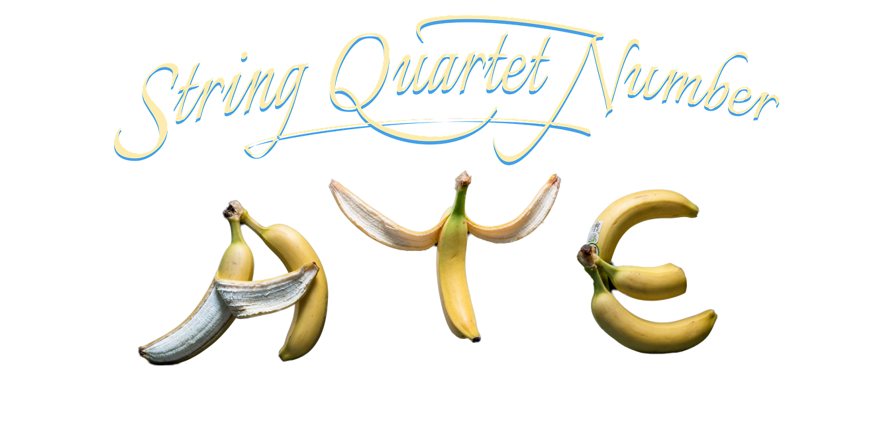
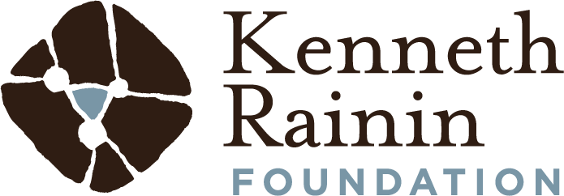
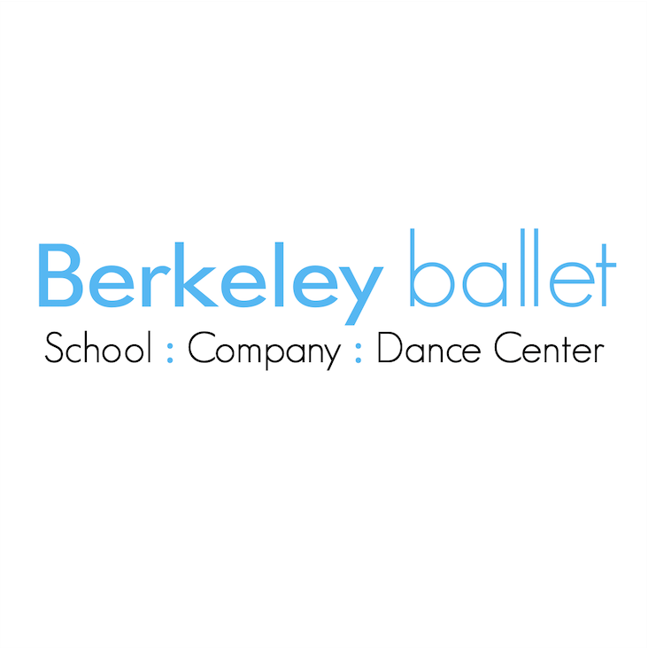

String Quartet No. ATE is a new evening-length dance exploring the tension between food, pleasure, and health, ignited by Reyes' adult Type 2 diabetes diagnosis. Set to a live performance of Shostakovich's String Quartet No. 8 by members of One Found Sound, this work moves through desire, temptation, obsession and resilience.
Reyes created String Quartet No. ATE in collaboration with movement artists Caitlin Hicks, Maya Mohsin, Giovana Sales Nascimento da Silva, Giulia Sales Nascimento da Silva and Brooke Terry, sound designers Emmet Webster and Michael Webster, costume designer Monique Prieto, and lighting designer Thomas Bowersox.
String Quartet No. ATE is generously supported by grants from the Kenneth Rainin Foundation and the San Francisco Arts Commission. The development of the work has also been supported by the Berkeley Ballet Artist in Residency Program, El Saloncito and the MERDE Project.
Artist's Note
This project has been such a joy to create. While it was initially inspired by my Type 2 diabetes diagnosis, this dance has truly taken a life of its own and become a metaphor for all kinds of obsessions. I don't want to give any spoilers away, so if you'd like to learn more about the project come chat with me and my creative team after the show!
HUGE thanks to my brilliant collaborators, to our awesome production team and to everyone joining us tonight! I hope you enjoy this work as much as we enjoyed creating it!
With so much gratitude and excitement,
Jocelyn
Credits
- Concept and Direction
- Jocelyn Reyes
- Performers, Dance Quartet
- Madison Lindgren, Maya Mohsin, Giovana Sales Nascimento da Silva, Giulia Sales Nascimento da Silva
- Performers, Cameo Trio
- Jonathan Kim, David Le, Ale Preciado
- Choreography
- Jocelyn Reyes in collaboration with the performers
- String Quartet Musicians
- One Found Sound
- Music
- Dimitri Shostakovich's String Quartet No. 8 in C Minor, arranged by Jocelyn Reyes
- Lighting Design
- Thomas Bowersox
- Costume Design
- Assembled by Jocelyn Reyes, tailored by May Lee
- Stage Manager
- Annie Tillis
Creative Team
Dance Artists
Madison Lindgren (she/they)
Madison Lindgren began her dance training in Lubbock, Texas, before continuing her education at the University of Utah and the Alonzo King LINES Ballet BFA Program at Dominican University. She is a graduate of the LINES Training Program and has since performed professionally with several Bay Area companies, most recently with REYES Dance, RAWDance, and Post:ballet.
Maya Mohsin (she/they)
Maya Mohsin is a dancer, choreographer, and teacher based in Oakland, CA. In 2022, they received their BFA in Dance from Dominican University Of California with the Alonzo King Lines Ballet BFA program, along with a minor in Community Action and Social Change. During her time in university, she performed works by Christian Burns, Gregory Dawson, Carmen Rosenstraten, Nick Korkos, Sidra Bell, and Dexandro Montalvo. Since graduating, Maya has danced for Jocelyn Reyes for REYES Dance, Roseann Baker, Andrea Salzar, Jennifer Perfilio Movement Works, Addison Norman and Erin Coyne. In 2022, they received the Give Em' Hope Award from the SF Gay Men's Chorus.
Giovana Sales Nascimento da Silva (she/her)
Giovana Sales Nascimento da Silva is a Brazilian contemporary dancer based in the Bay Area. A graduate of the Alonzo King LINES Ballet Training Program, her practice bridges contemporary, ballet, and Afro-Brazilian styles. Her career is deeply rooted in her homeland and cultural displacement. Giovana has collaborated with acclaimed artists such as Micaela G. Taylor, Rena Butler, Rosangela Silvestre, and Mike Tyus, performing with Bay Area companies such as Kristin Damrow & Company, REYES Dance, and Robert Moses' KIN. Her studies in Social Work at the Federal University of São Paulo profoundly informs her understanding of the dance world and the world itself.
Giulia Sales Nascimento da Silva (she/her)
Giulia Sales Nascimento da Silva is a Brazilian contemporary dancer based in Oakland. Originally from the periferia of São Vicente, São Paulo, her journey began through local social projects, leading to professional stages across Brazil. A graduate of the LINES Ballet Training Program, her practice integrates the rhythmic complexity of Brazilian modalities into contemporary frameworks. In the U.S, Giulia has performed with Robert Moses' KIN, Kristin Damrow & Company, and REYES Dance, collaborating with artists like Micaela G. Taylor and Mike Tyus. Her artistry investigates a non-universal dance, reflecting the cultural and social contexts from which it emerges.
Jonathan Kim (he/any)
Jonathan Kim is a dance artist currently based in the Bay Area. He is a company member with FACT/SF and recently worked with UNA productions, RAWdance, Repertory Dance Theatre (2019-2024), and SALT Contemporary Dance, among others. Choreographic and pedagogical interests include exploring the queer experience, identity, softness, groove, collaboration, choice-making, and non-traditional partnering. When not dancing, you can find them napping, drinking juice, or reading a good sci-fi/fantasy novel. Drag name: LUSTER.
David Le (he/they)
David Le, born and raised in San Jose, brings a rich blend of cultural and street dance influences into contemporary performance. A BFA graduate from San Jose State University, he's worked with artists like Sean Dorsey, Doug Varone, Kyle Abraham, and continues to move between communities, collaborating with groups like Decipher and Archive Dance Companies. Beyond the stage, David embodies care as a neuromuscular therapist and a proud human to his deaf dog, Wilbur.
Alejandra Preciado (she/her)
Alejandra Preciado, from Panama City, Panama, began dancing at three years old and later continued her training in Salt Lake City, Utah. She earned her B.F.A. from the Alonzo King LINES Ballet program, where she performed a diverse range of contemporary works. She remained in the Bay Area as a freelance artist before joining NW Dance Project, where she performed and taught for four years. Now back in the Bay Area, she continues working as a performer, educator, and dance maker.
Direction, Music, and Conversation
Jocelyn Reyes (she/her)
Jocelyn Reyes is a Latin American contemporary choreographer based in San Francisco. A first generation LA native, Reyes holds a B.S. in Cognitive Science and a B.A. in Dance from UCLA, and is the artistic director of REYES Dance (RD). Along with self-producing four evening length bodies of work, Reyes' choreography has been commissioned by Yerba Buena Gardens Choreofest, MERDE Project, El Saloncito and RAWdance concept series, and she has been an artist in residence with Berkeley Ballet Theater, Paul Dresher Ensemble and Zaccho Dance Theater. Most recently, Reyes was Izzie nominated for outstanding achievement in choreography/direction for the production of DIOS (2024) and is a current recipient of the San Francisco Arts Commission Impact Endowment Individual Artist Grant.
One Found Sound
One Found Sound (OFS) is a democratic orchestra focused on equitable and barrier-free music. The Bay Area's only conductorless, democratic, and musician-run orchestra, OFS's annual programs include exciting orchestral performances, educational programs for underserved youth and new music commissions focused on supporting works by diverse peoples. Their concerts are held in relaxed, unexpected venues where audiences are invited to experience the thrill of live orchestral music just as it inspires them.
Rebecca Fitton (she/they)
Rebecca Fitton is a queer, mixed race asian american, disabled, and immigrant artist and arts administrator. Their writing has been published by InDance, The Dancer-Citizen, Critical Correspondence, Dance Research Journal, and the American Journal of Arts Management. Most recently, she has been an artist-in-residence at Winslow House Project, the Maggie Allesee National Center for Choreography and the National Center for Choreography - Akron. She holds a MA in Performance as Public Practice from the University of Texas - Austin. They serve as a Co-Director at Bridge Live Arts and GRAVITY.
Production
Guillermo Webster (he/him)
Guillermo Webster is a computer guy, part-time graphic designer, and high-school-level modern dancer based in San Francisco. Webster majored in modern dance at a performing arts high school in LA, and earned a BS in Computer Science from MIT. Outside of his personal, secret artistic practice, Webster assists REYES Dance's production with a long-tail of design work and odd-jobs. Webster's favorite foods are Burrito and Pizza.
Thomas Bowersox (he/him)
Bio forthcoming.
Annie Tillis
Bio forthcoming.
Pilar Marsh
Bio forthcoming.
Dedications
Dedicated to Star, who passed away March 2026 due to complications with T1 Diabetes. Rest in power Starr.
In loving memory of Annabelle, who passed away May 19, 2026. Rest easy, dear Annabelle.
— Maya
Dedicated to my mother, whose endless love, support, and strength inspire me every day.
— Madison
We would like to dedicate this show to our grandmothers, who struggled with type 2 diabetes for most of their lives. Vó Chiquinha e Vó Clarice, que vocês recebam esse show com muita alegria onde quer que estejam.
— Giulia & Giovana
About REYES Dance
Founded in 2017 by first-generation Latinx choreographer Jocelyn Reyes, REYES Dance is a San Francisco based dance company dedicated to performance at the intersection of horror and humor. RD's artistic productions include live dance performances and an annual dance film festival, Dance Thrill Fest. RD's choreography layers humor, everyday gestures, theatricality and storytelling onto a rigorous contemporary movement base. RD's works have investigated poverty, domestic abuse, religion, chronic illness and health within the context of Latin American culture. By presenting a sensitive but lighthearted insider perspective, RD aims to shed light on the trials and tribulations faced by many, and envision a hopeful future.
Their programming has been supported by the San Francisco Arts Commission, CASH Grant, Zellerbach Family Foundation, Kenneth Rainin Foundation, California Arts Council, and the FACT/SF co-production grant, among others. Learn more at reyesdance.com.
About ODC Theater
Mission and Impact
ODC is dedicated to the lifecycle of the artistic process. Through its company, school and theater, ODC aims to inspire audiences, cultivate artists, engage community, and foster diversity and inclusion through dance.
ODC Theater exists to empower and develop innovative artists. It participates in the creation of new works through commissioning, presenting, mentorship and space access; it develops informed, engaged and committed audiences; and advocates for the performing arts as an essential component to the economic and cultural development of our community.
The Theater
This 170-seat venue is the site of over 150 performances a year involving nearly 1,000 local, regional, national and international artists. Since 1976, ODC Theater has been the mobilizing force behind countless San Francisco artists and a foothold for touring artists seeking a Bay Area debut.
For more information on ODC Theater and its programs, visit odc.dance/theater. Support ODC Theater at odc.dance/support-theater.
Connect
Supporters
String Quartet No. ATE is supported by the following organizations.

